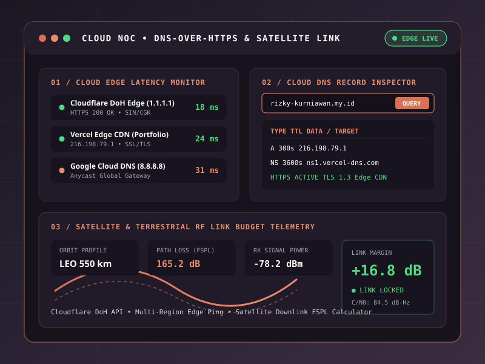
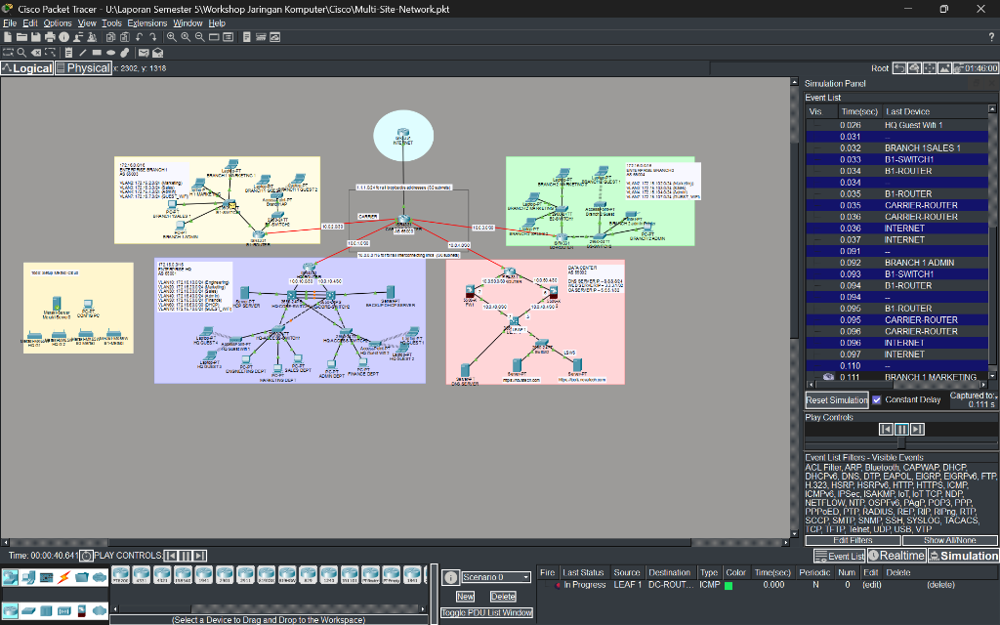
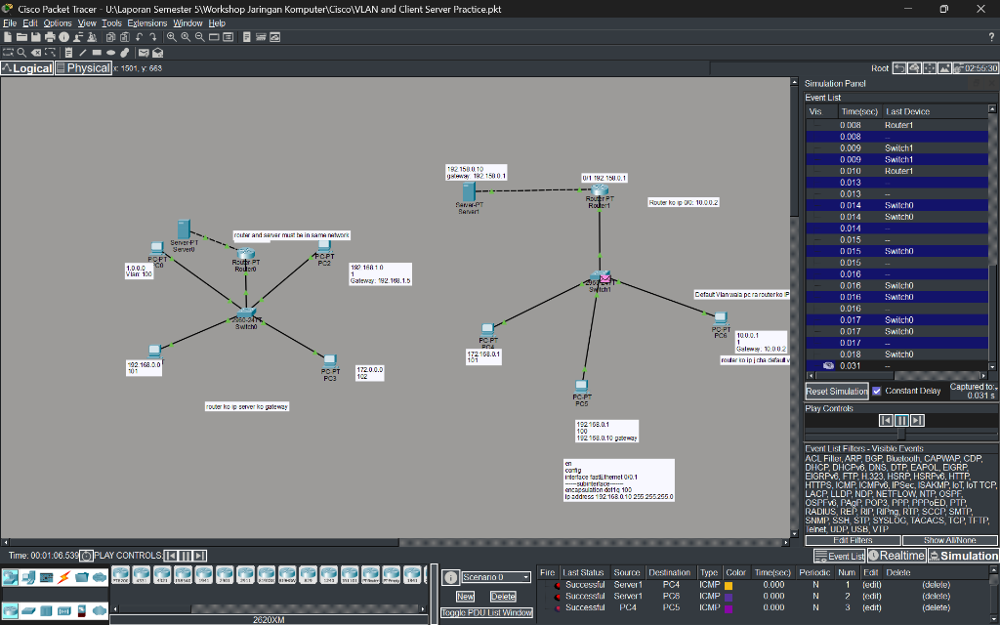
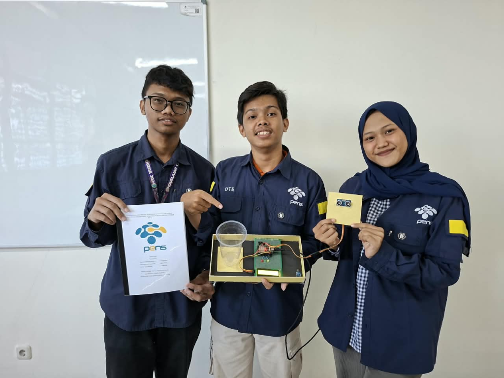
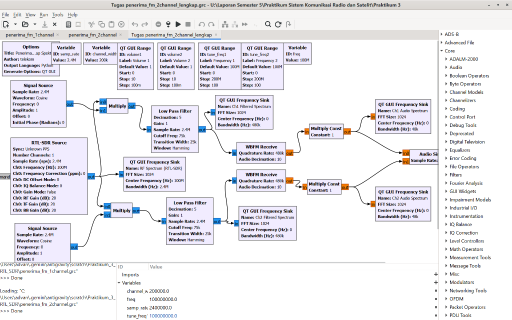
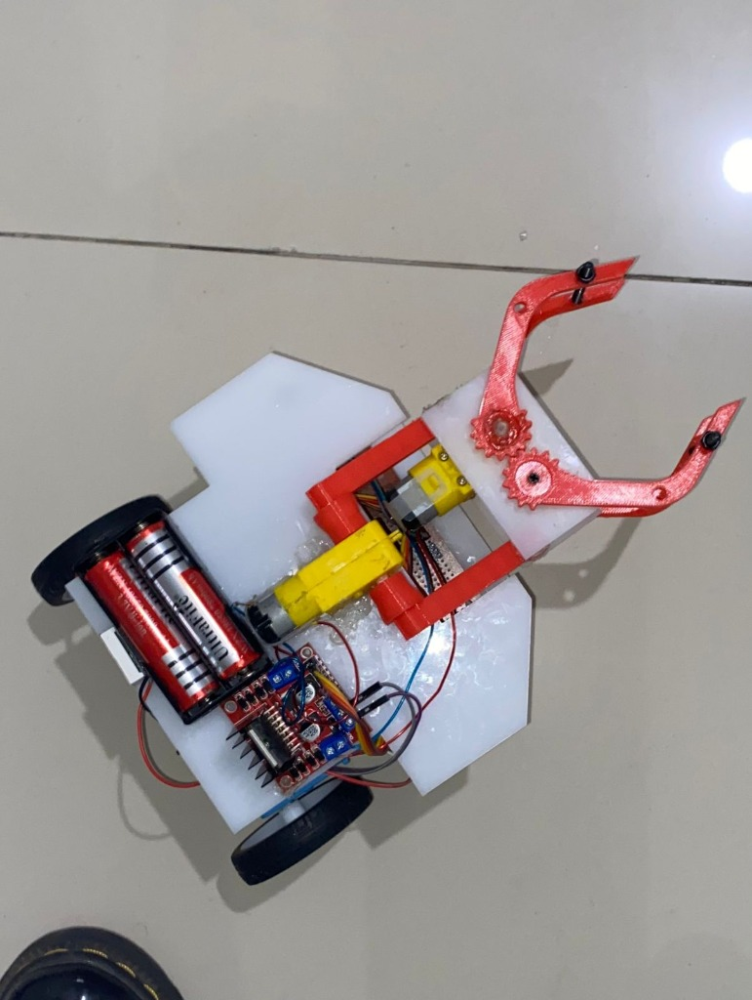

Live App Pop-up ↗CLOUD NOC & DNS INSPECTOR
Edge Telemetry & Link Budget Web App
Aplikasi web interaktif terintegrasi Cloudflare DNS-over-HTTPS (DoH) API, multi-cloud latency monitor, dan simulator RF satelit.
STR TEKNIK TELEKOMUNIKASI — PENS SURABAYA • NOC, SERVER & IOT
Klik kartu proyek mana pun untuk membuka Pop-up Detail Arsitektur, Tech Stack & Live Demo.

Live App Pop-up ↗Edge Telemetry & Link Budget Web App
Aplikasi web interaktif terintegrasi Cloudflare DNS-over-HTTPS (DoH) API, multi-cloud latency monitor, dan simulator RF satelit.

Pop-up ↗Multi-Site Network Architecture
Perancangan topologi jaringan enterprise yang menghubungkan HQ, kantor cabang, ISP Carrier, dan Data Center terpusat.

Pop-up ↗20+ Topologi Jaringan & Server
Segmentasi VLAN, konfigurasi router sub-interface (Inter-VLAN), manajemen layanan Client-Server, dan validasi ICMP.

Pop-up ↗ESP32 Wi-Fi Monitoring
Purwarupa monitoring ketinggian air otomatis berbasis ESP32 dan sensor ultrasonik yang terhubung ke dashboard web via Wi-Fi.

Pop-up ↗Dual-Channel Receiver (RTL-SDR)
Pemrosesan sinyal digital (DDC) di GNU Radio untuk menangkap dan mendemodulasi 2 kanal frekuensi radio secara simultan.

Pop-up ↗Line Follower & Servo Gripper
Integrasi mikrokontroler C++, driver motor L298N, sensor array optik inframerah, dan lengan capit servo untuk navigasi otonom.
"Tersertifikasi kompetensi tingkat Intermediate sebagai Associate Network Administrator dan Associate Computer Network Technician melalui program Digital Entitlement (DEX) Kementerian Komdigi RI di PENS Surabaya."
Halo! Saya mahasiswa aktif semester 5 program studi STr Teknik Telekomunikasi di Politeknik Elektronika Negeri Surabaya (PENS) dengan capaian IPK 3.43 / 4.00 (IPS terakhir 3.58). Meskipun latar belakang perkuliahan saya mencakup transmisi radio, satelit, dan gelombang mikro, fokus utama saya adalah Network Operations Center (NOC), IT Infrastructure, Linux Server Administration, dan Cloud.
Saya senang merancang arsitektur jaringan LAN/WAN yang andal, mengelola layanan terpusat Client-Server, melakukan analisis paket jaringan serta evaluasi keamanan dasar (Web Pentest), hingga mengintegrasikan telemetri perangkat IoT ke antarmuka web.
Internship / Kerja Praktik (KP) • Part-Time • Freelance
Terbuka untuk program Magang / Kerja Praktik maupun job sampingan (Part-Time / Project-Based) yang fleksibel dengan jadwal perkuliahan.
Sentuh / klik titik radar atau bar untuk inspeksi bukti ↘
Perancangan skema subnetting IPv4, segmentasi VLAN 802.1Q, Inter-VLAN routing, simulasi multi-site WAN (Cisco Packet Tracer & GNS3), serta aplikasi live Cloud NOC DoH.
Routing, Switching, segmentasi VLAN, desain topologi WAN enterprise, dan pemeliharaan konektivitas jaringan.
Administrasi dasar Linux CLI, layanan Client-Server (DNS, DHCP, Web, SQL), serta pembuatan dashboard/web teknis.
Analisis trafik paket (Wireshark), evaluasi keamanan dasar Web Pentest, dan integrasi sistem telemetri ESP32/IoT.
Saat ini terbuka untuk program Kerja Praktik / Magang Industri serta pekerjaan sampingan (Part-Time / Project-Based) di bidang NOC, infrastruktur IT, pengelolaan server, maupun pengembangan sistem IoT & web teknis.
Khusus Seputar Mochammad Rizky K.